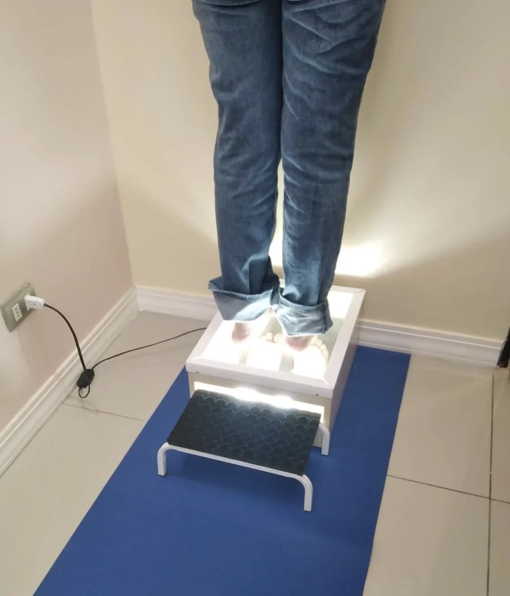

Plantillas para espolón calcáneo
Te sacaron una radiografía, apareció el espolón y quedó explicado el dolor. La historia real suele ser otra: lo que duele casi nunca es la espina de hueso, sino el tejido que la rodea. Y a ese sí se le puede quitar presión.
A domicilio en San Bernardo, La Florida, Talagante y Padre Hurtado; con receta, envíos a todo Chile.

Qué es
El espolón calcáneo es una prolongación de hueso que se forma en el calcáneo, el hueso del talón, en el punto donde la fascia plantar y otros tejidos se agarran al hueso.
Aquí viene la parte que sorprende a casi todo el mundo: hay muchas personas con espolón que no tienen ningún dolor, y muchas con dolor de talón que no tienen espolón. El espolón suele ser la consecuencia de años de tirones sobre ese punto de unión, no la causa del dolor.
Por eso la plantilla apunta casi siempre a lo mismo que en la fascitis plantar: bajarle la tensión a ese punto de unión y sacarle presión directa al talón.
Cómo se siente
- Dolor en la planta del talón, más al apoyar de golpe que al caminar despacio.
- Sensación de estar pisando una piedra o un clavo.
- Empeora sobre piso duro y con calzado de suela delgada.
- Peor después de estar mucho rato de pie o sentado.
- A veces duele también el borde interno del talón, donde tira la fascia.
Cómo ayuda una plantilla hecha a medida
Descarga puntual. Se rebaja exactamente donde está la zona sensible, de forma que el talón apoye alrededor y no encima. Esa es la diferencia de hacerla sobre la forma de tu pie: la descarga cae donde tiene que caer, no donde le tocó a la talla.
Amortigua el talón. El momento en que el talón toca el piso es el que más duele, y la plantilla está pensada para que ese golpe llegue más suave.
Soporte del arco. Si la fascia tira menos, el punto donde se agarra al talón recibe menos tirones. Es la misma lógica de la fascitis, y por algo van juntas tan seguido.
El objetivo no es «disolver» el espolón: no se disuelve. Es aliviar lo que está a su alrededor.
Las plantillas complementan la indicación de tu médico o kinesiólogo; no reemplazan una consulta. Si tu dolor es reciente, muy intenso o apareció después de un golpe, lo primero es que te vea un profesional.
Cómo lo evalúo
Palpo el talón para ubicar el punto exacto donde duele. Esa ubicación define dónde va la descarga: unos milímetros mal puestos y no sirve de nada.
En el podoscopio veo cómo cae el peso sobre el talón y si hay más carga en un lado que en el otro.
Miro tu calzado habitual, porque una suela delgada sobre cerámica es un multiplicador del problema.
Y te pregunto por la radiografía si la tienes, no por el espolón en sí, sino porque el informe a veces menciona otras cosas que importan.
¿Ya tienes receta médica?
Si tu médico o kinesiólogo ya te indicó plantillas, me envías la foto de la receta por WhatsApp y te cuento qué más necesito para confeccionarlas. Envíos a todo Chile.
Preguntas frecuentes
Si el espolón sigue ahí, ¿de qué me sirve una plantilla?
De que deje de recibir presión directa. Lo que duele es el tejido irritado alrededor del punto donde la fascia se agarra al hueso; el espolón es hueso y no tiene por qué doler por sí solo. Sacándole carga a esa zona, el tejido tiene la oportunidad de calmarse.
¿Me tienen que operar?
Eso lo decide tu traumatólogo, no yo. Lo que yo hago es la plantilla que acompaña el tratamiento que él te indique.
¿Sirve la talonera de gel del supermercado?
Levanta el talón y amortigua, y para algunas personas eso ya alivia algo. Pero no descarga un punto concreto ni sostiene el arco, que es de donde viene la tracción. Suele ser un parche corto.
¿Puedo seguir caminando?
Eso te lo dice tu médico. Lo que sí conviene revisar es sobre qué caminas y con qué: piso duro y suela delgada son la peor combinación.
¿Cuánto cuestan?
Depende de la modalidad y de lo que necesite tu caso. Te cotizo por WhatsApp antes de empezar, así que sabes el valor antes de que confeccione nada.
Te atiende Monserrat
Soy Monserrat Velásquez Hernández, terapeuta ocupacional. Si te hicieron una radiografía, ten el informe a mano el día de la visita. Igual, lo que más me orienta es palpar tu talón y ver dónde duele al apoyar.
Conoce mi trayectoria y mi forma de trabajar
«Me quedaron super bien. Se sienten más cómodas de lo que pensé […]»
Cuéntame tu caso
Me dices qué sientes y desde cuándo, y vemos juntos si unas plantillas a medida son lo que necesitas.